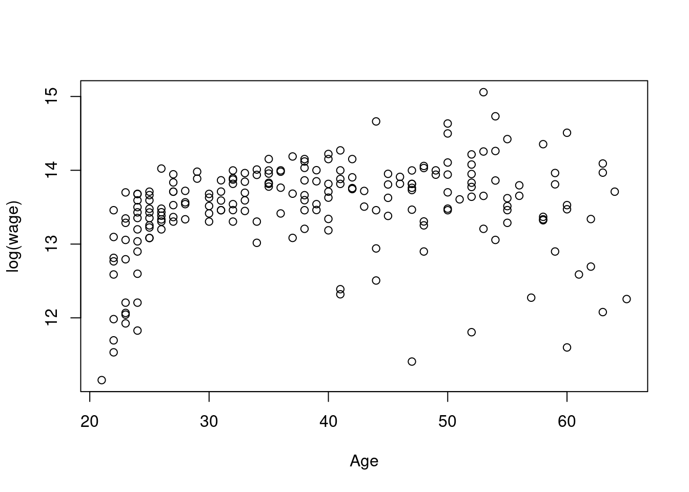
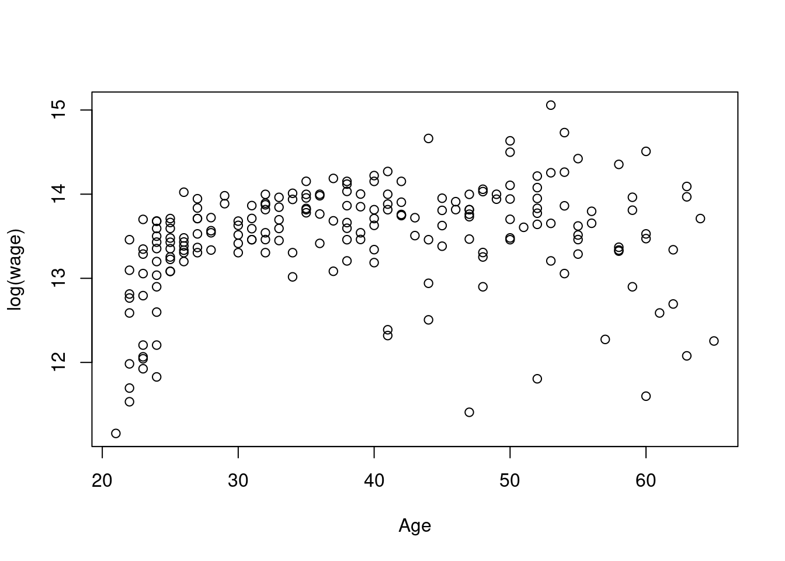
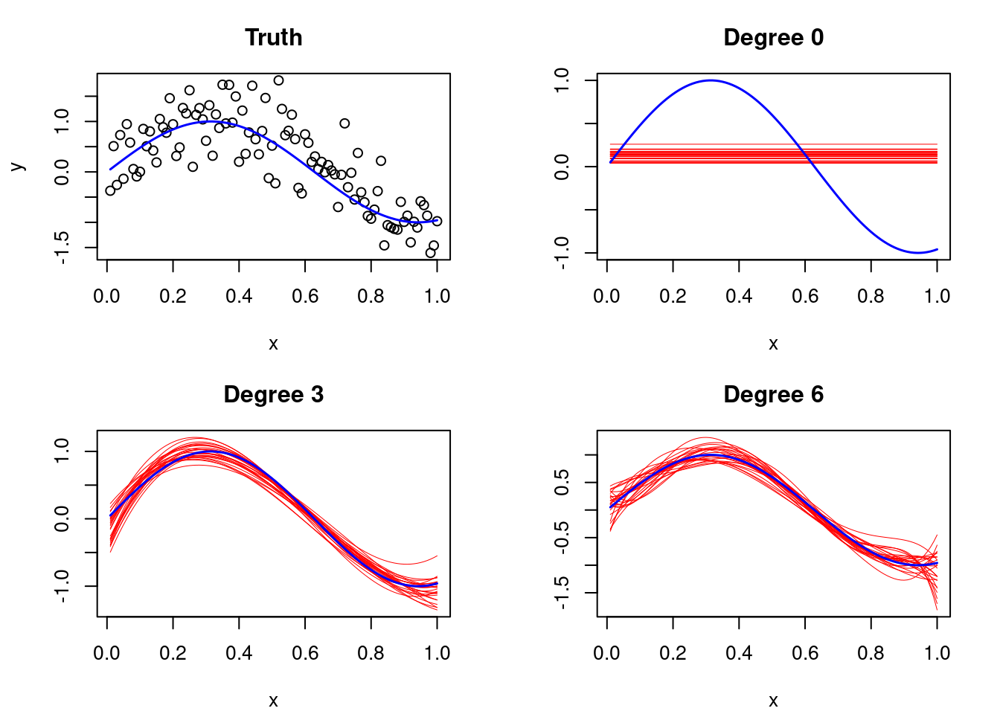
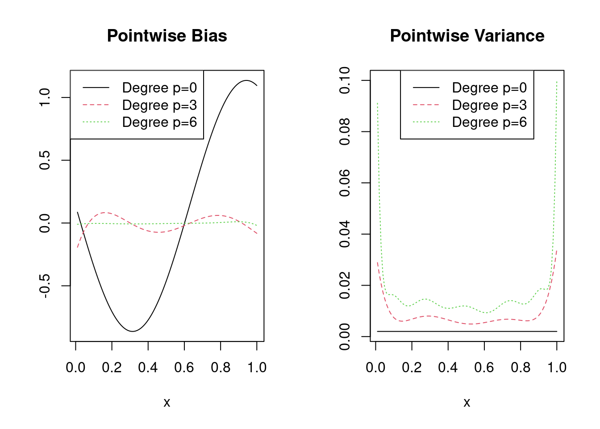

suppressPackageStartupMessages(library("np"))
data("cps71")
plot(cps71$age, cps71$logwage, xlab="Age", ylab="log(wage)")
Let us consider the case of univariate nonparametric regression, i.e., with one single explanatory variable \(X\in\mathbb{R}\).
Data: \[ (Y_{1},X_{1}),\dots,(Y_{n},X_{n})\overset{\text{i.i.d}}{\sim}(Y,X) \]
\[ Y_i=m(X_i)+\varepsilon_i \]
Special cases of parametric regression models:
Linear regression: \(m(x)\) is a straight line \[ m(X)=\beta_0+\beta_1 X \]
Possible generalizations: \(m(x)\) quadratic or cubic polynomial \[ \begin{align*} m(X)&=\beta_0 +\beta_1 X+\beta_2 X^2\\ \text{or} \quad m(X)&=\beta_0+\beta_1 X+\beta_2 X^2+\beta_3 X^3 \end{align*} \]
Many important applications lead to regression functions possessing a complicated structure. Standard models then are “too simple” and do not provide useful approximations of \(m(x)\).
“All models are false, but some are useful” (G. Box)
Example:
Canadian cross-section wage data consisting of a random sample taken from the 1971 Canadian Census Public Use Tapes for male individuals having common education (grade 13).
suppressPackageStartupMessages(library("np"))
data("cps71")
plot(cps71$age, cps71$logwage, xlab="Age", ylab="log(wage)")
There are no specific assumptions about the structure of the regression function. It is only assumed that \(m\) is smooth.
An important point in theoretical analysis is the way how the observations \(X_1,\dots,X_n\) have been generated. One distinguishes between “fixed” and “random design”.
In the case of random design, \(m(x)\) is the conditional expectation of \(Y\) given \(X=x\), \[ m(x)=\mathbb{E}(Y|\ X=x) \]
and \(Var(\varepsilon_i|X_i)=\sigma^2\).
For random design all expectations (as well as variances) have to be interpreted as conditional expectations (variances) given \(X_1,\dots,X_n\).
Some frequently used approaches to nonparametric regression rely on expansions of the form \[ m(x)\approx \sum_{j=1}^p \beta_j b_j(x), \] where \(b_1(x),b_2(x),\dots\) are suitable basis functions.
The basis functions \(b_1,b_2,\dots\) have to be chosen in such a way that for any possible smooth function \(m\) the approximation error \[ \min_\beta |m(x)-\sum_{j=1}^p \beta_j b_j(x)| \] tends to zero as \(p\rightarrow\infty\) (approximation theory).
For a fixed value \(p\) an estimator \(\hat m_p\) is determined by \[ \hat m(x)=\sum_{j=1}^p \hat\beta_j b_j(x), \] where the coefficients \(\hat\beta_j\) are obtained by ordinary least squares \[ \sum_{i=1}^n \left( Y_i-\sum_{j=1}^p \hat\beta_j b_j(X_i)\right)^2 =\min_{\beta_1,\dots,\beta_p} \sum_{i=1}^n \left( Y_i-\sum_{j=1}^p \beta_j \underbrace{b_j(X_i)}_{X_{ij}}\right)^2 \]
Examples are approximations by polynomials, spline functions, wavelets or Fourier expansions (for periodic functions).
Theoretical Justification: Every smooth function can be well approximated by a polynomial of sufficiently high degree.
Approach:
Note: It is only assumed that \(m\) is well approximated by a polynomial of degree \(p\). That is, there will usually still exist an approximation error (i.e., bias of \(\hat{m}_p \neq 0\)).
R-Code to compute polynomial regressions:
Generate some data:
set.seed(1)
# Generate some data:
n <- 100 # Sample Size
x_vec <- (1:n)/n # Equidistant X
# Gaussian iid error term
e_vec <- rnorm(n = n, mean = 0, sd = .5)
# Dependent variable Y
y_vec <- sin(x_vec * 5) + e_vec
# Save all in a dataframe
db <- data.frame(x=x_vec,y=y_vec)Compute the ordinary least squares regressions of different polynomial regression models:
# Fitting of polynomials to the data (parametric models):
# Constant line fit: (Basis function x^0)
reg_p1 <- lm(y ~ 1, data=db)
# Basis functions: x^0 + ... + x^3
reg_p3 <- lm(y ~ poly(x, degree = 3, raw = TRUE), data=db)
# Basis functions: x^0 + ... + x^6
reg_p6 <- lm(y ~ poly(x, degree = 6, raw = TRUE), data=db)Take a look at the fits:
par(mfrow=c(2,2), mar=c(4.1,4.1,3.1,2.1))
plot(db, main="Truth")
lines(y=sin(x_vec * 5), x=x_vec, col="blue", lwd=1.5)
##
plot(db, main="Degree 0")
lines(y = predict(reg_p1, newdata = db),
x = x_vec, col="red", lwd=1.5)
plot(db, main="Degree 3")
lines(y = predict(reg_p3, newdata = db),
x = x_vec, col="red", lwd=1.5)
plot(db, main="Degree 6")
lines(y = predict(reg_p6, newdata = db),
x = x_vec, col="red", lwd=1.5)
The quality of the approximation obviously depends on the choice of \(p\) which serves as a “smoothing parameter”
m_true <- sin(x_vec * 5)
n_MCrepl <- 200 # MC-replications
m_hat_p1 <- matrix(NA, n, n_MCrepl)
m_hat_p3 <- matrix(NA, n, n_MCrepl)
m_hat_p6 <- matrix(NA, n, n_MCrepl)
for(r in 1:n_MCrepl){
# Generate some data:
e_vec <- rnorm(n = n, mean = 0, sd = .5)
y_vec <- sin(x_vec * 5) + e_vec
db <- data.frame(x = x_vec,y = y_vec)
# Estimations
reg_p1 <- lm(y ~ 1, data=db)
reg_p3 <- lm(y ~ poly(x, degree = 3, raw = TRUE), data=db)
reg_p6 <- lm(y ~ poly(x, degree = 6, raw = TRUE), data=db)
# Save predictions (y hat)
m_hat_p1[,r] <- predict(reg_p1, newdata = db)
m_hat_p3[,r] <- predict(reg_p3, newdata = db)
m_hat_p6[,r] <- predict(reg_p6, newdata = db)
}
par(mfrow=c(2,2), mar=c(4.1,4.1,3.1,2.1))
plot(db, main="Truth")
lines(y=sin(x_vec * 5), x=x_vec, col="blue", lwd=1.5)
##
subSelect <- 25
matplot(y = m_hat_p1[,1:subSelect],
x = x_vec, type = "l", lty = 1, ylab = "", xlab = "x",
ylim = range(m_hat_p1[,1:subSelect], sin(x_vec * 5)),
col=rep("red",n), lwd=0.5, main = "Degree p=0")
lines(y=sin(x_vec * 5), x=x_vec, col="blue", lwd=1.5)
##
matplot(y = m_hat_p3[,1:subSelect],
x = x_vec, type = "l", lty = 1, ylab = "", xlab = "x",
ylim = range(m_hat_p3[,1:subSelect], sin(x_vec * 5)),
col=rep("red",n), lwd=.5, main = "Degree p=3")
lines(y=sin(x_vec * 5), x=x_vec, col="blue", lwd=1.5)
##
matplot(y = m_hat_p6[,1:subSelect],
x = x_vec, type = "l", lty = 1, ylab = "", xlab = "x",
ylim = range(m_hat_p6[,1:subSelect], sin(x_vec * 5)),
col=rep("red",n), lwd=.5, main = "Degree p=6")
lines(y=sin(x_vec * 5), x=x_vec, col="blue", lwd=1.5)
## Pointwise (for each x) biases of \hat{m}(x):
Pt_Bias_p1 <- rowMeans(m_hat_p1) - m_true
Pt_Bias_p3 <- rowMeans(m_hat_p3) - m_true
Pt_Bias_p6 <- rowMeans(m_hat_p6) - m_true
## Pointwise (for each x) variances \hat{m}(x):
Pt_Var_p1 <- apply(m_hat_p1, 1, var)
Pt_Var_p3 <- apply(m_hat_p3, 1, var)
Pt_Var_p6 <- apply(m_hat_p6, 1, var)
par(mfrow=c(1,2))
matplot(y = cbind(Pt_Bias_p1, Pt_Bias_p3, Pt_Bias_p6),
x = x_vec, type = "l",
main = "Pointwise Bias", ylab="", xlab="x")
legend("topleft", col = c(1,2,3), lty = c(1,2,3),
legend = c("Degree p=0", "Degree p=3", "Degree p=6"))
matplot(y = cbind(Pt_Var_p1, Pt_Var_p3, Pt_Var_p6),
x = x_vec, type = "l",
main = "Pointwise Variance", ylab="", xlab="x")
legend("top", col = c(1,2,3), lty = c(1,2,3),
legend = c("Degree p=0", "Degree p=3", "Degree p=6"))
Polynomial regression is not very popular in practice. Reasons are numerical problems in fitting high dimensional polynomials. Furthermore, high order polynomials often posses an erratic, difficult to interpret behavior at the boundaries.
The practical disadvantages of global basis functions (like polynomials), explain the success of local basis functions. A frequently used system of basis functions are local polynomials, i.e., so-called “spline functions”.
A spline function is a piece wise polynomial function. They are defined with respect to a pre-specified sequence of \(q\) “knots” \[ a=\tau_1<\tau_2\leq\dots\leq \tau_{q-1}<\tau_q=b. \] Different specifications of the knot sequence lead to different splines.
More precisely, for a given knot sequence a spline function \(s(x)\) of degree \(k\) is defined by the following properties:
\(s(x)\) is a polynomial of degree \(k\) in every interval \([\tau_j,\tau_{j+1}]\), i.e. \[ s(x)=s_0+s_1x+s_2x^2+\dots+s_kx^{k},\quad x\in[\tau_j,\tau_{j+1}] \] with \(s_0,\dots,s_k\in\mathbb{R}.\)
\(s(x)\) is \(k-1\) times continuously differentiable at each knot point \(x=\tau_j\), \(j=1,\dots,q\).
\(s(x)\) is called a linear spline if \(k=1\),
\(s(x)\) is a quadratic spline if \(k=2\), and
\(s(x)\) is a cubic spline if \(k=3\).
In practice, the most frequently used splines are cubic spline functions based on an equidistant sequence of \(q\) knots, i.e., \[ \tau_{j+1}-\tau_j=\tau_j-\tau_{j-1}\quad\text{for all } j. \]
The space of all spline functions of degree \(k\) defined with respect to a given knot sequence \[ a=\tau_1<\tau_2\leq\dots\leq \tau_{q-1}<\tau_q=b \] is a \[ p:=q+k-1 \] dimensional linear function space \[ {\cal{S}}_{k,\tau_1,\dots,\tau_q}=\operatorname{span}(b_{1,k},\dots,b_{p,k}), \] where \(b_{1,k},\dots,b_{p,k}\) are basis-functions.
The so-called B-spline basis functions are almost always used in practice, since they possess a number of advantages from a numerical point of view.
The B-Spline basis functions \[ b_{j,k},\quad j=1,\dots,p=q+k-1, \] for splines of order \(k\) based on a knot sequence \[ a=\tau_1<\tau_2\leq\dots\leq \tau_{q-1}<\tau_q=b \] are calculated by a recursive procedure: \[ b_{j,0}(x)=\left\{ \begin{matrix} 1 & \text{ if } \tau_{j}^*\leq x <\tau_{j+1}^*\\ 0 & \text{ else} \end{matrix}\right., \] for \(j=1,\dots,p=q+2k-1.\)
And for \(l=1,\dots,k\) \[ b_{j,l}(x)=\frac{x-\tau_j^*}{\tau_{l+j}^*-\tau_j^*}b_{j,l-1}(x)+ \frac{\tau_{l+j+1}^*-x}{\tau_{l+j+1}^*-\tau_{j+1}^*}b_{j+1,l-1}(x), \] \(j=1,\dots,q+k-1\), and \(x\in [a,b],\)
where
The following R code generates
\[
p=\underbrace{\texttt{Numbr.of Knots}}_{q=7} + \underbrace{\texttt{degree}}_{k=3} - 1=9
\] cubic B-spline basis functions. Let’s take a look at them:
library("splines2")
degree <- 3
ord <- degree + 1
internal_knots <- seq(from = 0.1, to = 0.9, by = 0.2)
boundary_knots <- c(0, 1)
all_knots <- sort(c(rep(boundary_knots[1], ord),
internal_knots,
rep(boundary_knots[2], ord)))
## evaluation points
x_vec <- seq(from = boundary_knots[1],
to = boundary_knots[2], len = 100)
B_mat_degree3 <- splines2::bSpline(
x = x_vec,
knots = internal_knots,
degree = degree,
intercept = TRUE,
Boundary.knots = boundary_knots
)
matplot(x = x_vec,
y = B_mat_degree3,
type = "l", main = "B-Spline Basis Functions \nDegree 3",
ylab = "", xlab = "x")
dim(B_mat_degree3)[1] 100 9The so-called “regression spline” (or “B-spline”) approach to estimating a regression function \(m(x)\) is based on fitting a set of spline basis functions to the data.
Frequently, cubic splines (\(k=3\)) with equidistant knots are applied.
In this case the number of knots \(q,\) or more precisely the total number of basis functions \[ p=q+k-1 \] with \(k=3\) in the case of cubic B-splines serves as the smoothing parameter which has to be selected by the statistician.
An estimator \(\hat{m}_p(x)\) is then given by \[ \hat m_p(x)=\sum_{j=1}^p \hat\beta_j b_{j,k}(x), \] and the coefficients \(\hat\beta_j\) are determined by ordinary least squares.
Let \[ Y=(Y_1,\dots,Y_n)^\top \] denote the vector of response variables and let \[ \mathbf{X} \] denote the \(n\times p\) matrix with elements \[ X_{ij}=b_{j,k}(X_i),\quad i=1,\dots,n,\quad j=1,\dots,p. \]
Then the OLS estimator \[ \hat \beta=(\hat\beta_1,\dots,\hat\beta_p)^\top \] can be written as \[ \hat\beta=(\mathbf{X}^\top \mathbf{X})^{-1}\mathbf{X}^\top Y. \] The fitted values are given by \[ % \left(\begin{array}{c} % {\hat Y}_1\\ % \vdots%\\ \cdot\\ \cdot % \\ {\hat Y}_n % \end{array}\right)= \left(\begin{array}{c} {\hat m}_p(X_1)\\ \vdots%\\ \cdot\\ \cdot \\ {\hat m}_p(X_n) \end{array}\right)=\mathbf{X}\hat\beta=\underbrace{\mathbf{X}(\mathbf{X}^\top \mathbf{X})^{-1}\mathbf{X}^\top }_{=:S_p}Y \]
The matrix \(S_p\) is referred to as the smoothing matrix and the number of B-spline basis function \(p\) is referred to as the smoothing parameter.
Quite generally, the most important nonparametric regression procedures are linear smoothing methods. This means that in dependence of some smoothing parameter (here \(p\)), estimates of the vector \[ (m(X_1),\dots,m(X_n))^\top \] are obtained by multiplying a smoother matrix \(S_p\) with \(Y\).
That is, \[ \left(\begin{array}{c} m(X_1)\\ \vdots%\\ \cdot\\ \cdot \\ m(X_n) \end{array}\right)\approx \left(\begin{array}{c} {\hat m}_p(X_1)\\ \vdots%\\ \cdot\\ \cdot \\ {\hat m}_p(X_n) \end{array}\right)=S_p Y \]
R code to compute regression splines:
First, we generate some data.
set.seed(1)
# Generate some data: #################
n <- 100 # Sample Size
x_vec <- (1:n)/n # Equidistant X
# Gaussian iid error term
e_vec <- rnorm(n = n, mean = 0, sd = .5)
# Dependent variable Y
y_vec <- sin(x_vec * 5) + e_vecThen, we generate cubic B-spline basis functions with (different) equidistant knot sequences and evaluate them at x\_vec:
degree <- 3 # piecewise cubic splines
knot_seq_5 <- seq(from = 0, to = 1, len = 5)# knots
B_mat_p7 <- splines2::bSpline(
x = x_vec, # evaluation points
knots = knot_seq_5[-c(1, length(knot_seq_5))],
degree = degree,
intercept = TRUE,
Boundary.knots = knot_seq_5[ c(1, length(knot_seq_5))]
)
knot_seq_15 <- seq(from = 0, to = 1, len = 15)# knots
B_mat_p17 <- splines2::bSpline(
x = x_vec, # evaluation points
knots = knot_seq_15[-c(1, length(knot_seq_15))],
degree = degree,
intercept = TRUE,
Boundary.knots = knot_seq_15[ c(1, length(knot_seq_15))]
) Compute the smoothing matrices \(S_p\) for \(p=7\) and \(p=17\):
S_p7 <- B_mat_p7 %*% solve(t(B_mat_p7) %*% B_mat_p7) %*% t(B_mat_p7)
S_p17 <- B_mat_p17 %*% solve(t(B_mat_p17) %*% B_mat_p17) %*% t(B_mat_p17) Compute the estimates \(\hat{m}_p(X_1),\dots,\hat{m}_p(X_n)\) for \(p=7\) and \(p=17\):
m_hat_p7 <- S_p7 %*% y_vec
m_hat_p17 <- S_p17 %*% y_vecLet’s plot the results:
plot(y=y_vec, x=x_vec, xlab="X", ylab="Y",
main="Regression Splines")
lines(y=sin(x_vec * 5), x=x_vec, col="red", lty=2, lwd=1.5)
lines(y=m_hat_p7, x=x_vec, col="blue", lwd=1.5)
lines(y=m_hat_p17, x=x_vec, col="darkorange", lwd=1.5)
legend("bottomleft",
c("(Unknown) Regression Function m",
"Regr.-Spline Fit with p=7",
"Regr.-Spline Fit with p=17"),
col=c("red","blue", "darkorange"),
lty=c(2,1,1), lwd=c(2,2,2))
In a nonparametric regression context we do not assume that the unknown true regression function \(m(x)\) exactly corresponds to a spline function. Thus, \[ \hat m_p=(\hat{m}_p(X_1),\dots,\hat{m}_p(X_n))^\top \] possesses a systematic estimation error (bias). That is, \[ \mathbb{E}_\varepsilon(\hat{m}_p(X_i))\neq m(X_i). \]
To simplify notation, we will in the following write \[ \mathbb{E}_\varepsilon(\cdot)\quad\text{and}\quad Var_\varepsilon(\cdot) \] to denote expectation and variance “with respect to the random variable \(\varepsilon\), only”.
In the case of random design, \[ \mathbb{E}_\varepsilon(\cdot)\quad\text{and}\quad Var_\varepsilon(\cdot) \] thus denote the conditional expectation \[ \mathbb{E}(\cdot|X_1,\dots,X_n) \] and the conditional variance \[ Var(\cdot|X_1,\dots,X_n) \] given the observed \(X\)-values.
For random design, these conditional expectations depend on the observed sample, and thus are random. For fixed design, such expectations are of course fixed values.